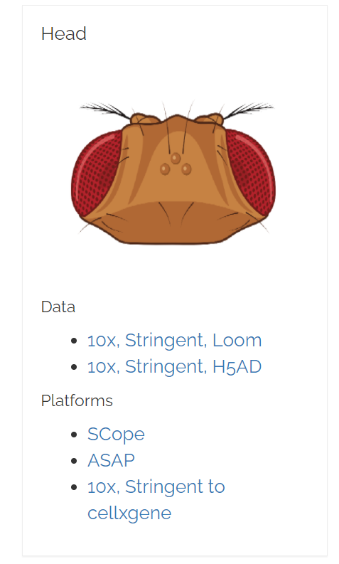
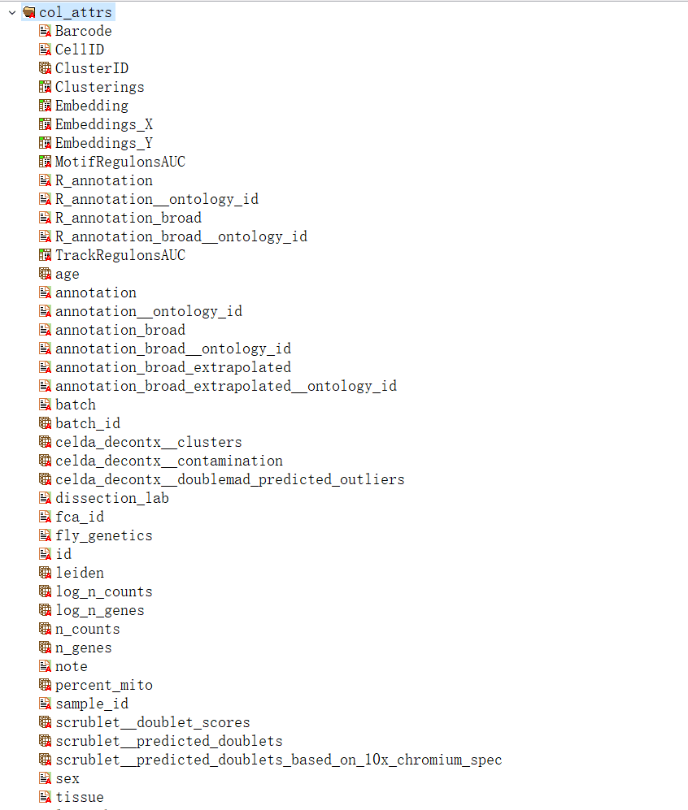
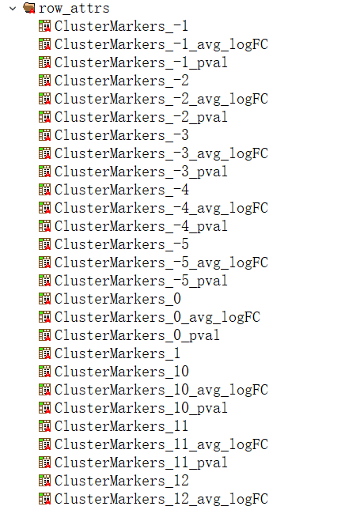

最近看到Fly Cell Atlas (FCA) 公布果蝇的多个组织的单细胞核转录组测序数据，虽然FCA组织提供了多个在线平台（例如SCope）进行非常方便的可视化和多种分析。然而，由于网速的原因，还是希望将数据下载到本地进行分析。
Figure Source: SCope (https://scope.aertslab.org/#/FlyCellAtlas/ )
FCA提供了.loom 和 .h5ad格式的数据，而我比较习惯使用R的Seurat处理单细胞的数据，便想看看有没有方法将这两种格式的文件转换成Seurat对象。
实际上，Seurat也开发了SeuratDisk这一软件包支持将.loom转换为Seurat对象（还支持多种单细胞数据格式的转换）。
不巧的是，FCA的数据存储格式似乎与Seurat设置的格式不一致，导致简单的数据转换变得十分复杂…因此，本文记录我在转换.loom/.h5ad为Seurat对象时踩过的坑。
数据下载 FCA的测序数据都可以在该网站下载：https://flycellatlas.org/
我这篇文章先尝试了使用果蝇头部的数据进行转换

Figure Source: Fly Cell Atlas (https://flycellatlas.org/ )
loom 文件 .loom格式是一种用于处理大型单细胞数据的文件格式，它并不直接将单细胞数据读入（R中），而是与文件创建链接。这样可以只在使用到数据时，读入其中的一部分，避免内存的过度占用（个人理解 ）。
Figure Source: Loompy (http://linnarssonlab.org/loompy/index.html )
FCA 中使用的是3.0.0版本的loom，以下我只对这个版本的格式进行介绍。
.loom实质上是基于HDF5 (Hierarchical Data Format )格式的。所以，我们可以使用HDFView 这种查看HDF格式的软件观察其中的数据格式。
HDFView可在https://www.hdfgroup.org/downloads/hdf5/ 下载
邮箱注册之后选择相应系统版本下载就行。
loom v3的文件包含了以下几个层级的数据：
/matrix(must): 基因*细胞的矩阵/attrs (must): 全局的属性信息，例如使用的参考基因组、数据创建日期等信息/col_attrs (must): 列（细胞）的属性，例如barcode, cell id, cell annotation

/row_attrs (must): 行（基因）的属性，包括基因ID，细胞marker之类的

/layers (optional): 另外的基因*细胞矩阵，例如可以保存Seurat的data以及scale.data
/col_graphs (optional): 细胞的图信息，例如最近邻图（nearest-neighbor graphs）
/row_graphs (optional): 基因的图信息
loom to Seurat 简单了解loom文件格式后，我们就可以在R中着手将其转换为Seurat对象
SeuratDisk提供了在R中处理 loom v3文件所需的函数。
目前SeuratDisk还只能安装其Github上的版本
1 remotes::install_github(repo = 'mojaveazure/seurat-disk' , ref = 'develop' )
创建loom链接 1 2 3 4 5 6 7 8 9 10 11 12 13 14 15 16 17 18 19 20 21 library(SeuratDisk) library(SeuratObject) library(Seurat) ds <- Connect(filename = "data/ref/s_fca_biohub_head_10x.loom" , mode = "r" ) > ds Class: loom Filename: ~\data\ref\s_fca_biohub_head_10x.loom Access type: H5F_ACC_RDONLY Attributes: last_modified Listing: name obj_type dataset.dims dataset.type_class attrs H5I_GROUP <NA > <NA > col_attrs H5I_GROUP <NA > <NA > col_graphs H5I_GROUP <NA > <NA > layers H5I_GROUP <NA > <NA > matrix H5I_DATASET 100527 x 13056 H5T_FLOAT row_attrs H5I_GROUP <NA > <NA > row_graphs H5I_GROUP <NA > <NA >
访问loom中的数据 可以通过[[的方法访问loom文件中的数据，注意到我们是通过一种路径的方式来访问其中的数据
1 2 3 4 5 6 7 8 9 10 11 12 13 14 15 16 17 18 19 20 21 22 23 > ds[["/matrix" ]] Class: H5D Dataset: /matrix Filename: ~\data\ref\s_fca_biohub_head_10x.loom Access type: H5F_ACC_RDONLY Datatype: H5T_IEEE_F32LE Space: Type=Simple Dims=100527 x 13056 Maxdims=Inf x 13056 Chunk: 64 x 64 > ds[["/matrix" ]][1 :3 ,1 :3 ] [,1 ] [,2 ] [,3 ] [1 ,] 0 7 19 [2 ,] 0 1 2 [3 ,] 0 1 4 > ds[["/matrix" ]]$dims [1 ] 100527 13056 > ds[["/col_attrs/annotation" ]][1 :3 ] [1 ] "unannotated" "unannotated" "lamina wide-field 2 neuron"
在R中，HDF5格式的文件被转换为H5D类的对象，类似于R6对象，H5D也定义了一系列的方法
1 2 3 4 5 6 7 8 9 10 11 12 13 > ds[['/matrix' ]]$methods() <H5D> Inherits from: <H5RefClass> Public: attr_delete: function (attr_name) attr_delete_by_idx: function (n, obj_name, idx_type = h5const$H5_INDEX_NAME, order = h5const$H5_ITER_NATIVE, ... Private: closeFun: function (id) get_robj_dim: function (reg_eval_res) pid: environment pmessage: stopOnInvalid: function (error.msg = "The object is invalid" )
由于我没有深入去探究H5D类的各种方法是如何调用，这里就不做展开了，有兴趣的朋友可以查看Rhdf5r包的文档：
https://www.rdocumentation.org/packages/hdf5r/versions/1.3.3/topics/H5D-class
Converting from loom to seurat 接下来，我尝试通过Seurat::as.Seurat()将loom格式转换为Seurat对象。但在运行几个步骤后就报错了…
1 2 3 4 5 6 7 > fca_head_seurat <- as.Seurat(ds)
搜索该报错，可以找到seurat github上的一个issue有讨论这种错误。
https://github.com/satijalab/seurat/issues/5124
大意是FCA存储loom文件的格式跟Seurat识别的格式不太一样，所以就报错了。目前这种格式对应的问题还没解决，只能通过使用H5AD格式的文件转换为Seurat对象来绕过这个问题。
H5AD H5AD 也是一种HDF5格式的文件，其中包含额外的AnnData
Figure Source: AnnData (https://anndata.readthedocs.io/en/latest/ )
这里不再过多介绍H5AD，我们大概知道它也是用于存储单细胞数据就可以了，有兴趣的朋友可以自行了解：https://anndata.readthedocs.io/en/latest/
Converting h5ad to seurat 接下来，我们将H5AD转换为h5seurat格式，再读入R中就是Seurat对象了
1 2 3 4 5 6 7 8 9 10 11 12 library(Seurat) library(SeuratData) library(SeuratDisk) Convert("data/ref/s_fca_biohub_head_10x.h5ad" , dest="h5seurat" , overwrite=T ) fca_head <- LoadH5Seurat("data/ref/s_fca_biohub_head_10x.h5seurat" ) > fca_head An object of class Seurat 1838 features across 100527 samples within 1 assay Active assay: RNA (1838 features, 0 variable features) 3 dimensional reductions calculated: pca, tsne, umap
这次转换成功了，我们获得Seurat对象 😃
但是，注意到h5ad转换过来的对象只有1838个基因，而不是loom文件中的13056个。有可能是因为这个数据中的基因是经过一定过滤的。
读入的这个对象居然有10.1 GB这么大，难怪他们会用loom/h5ad的文件格式来进行分析
在读入数据后，事情也还没结束。因为我们需要的是它的细胞注释信息。但是读入的数据结构中，有关细胞信息的meta.data居然是空的。
1 2 > fca_head@meta.data data frame with 0 columns and 100527 rows
仔细观察其数据结构发现，相关的注释信息都存储在fca_head@misc当中，但问题在于找不到一个注释数据与细胞ID是匹配的。换言之，我也不能借助h5ad这组数据获得细胞注释。
Create seurat object 在转换的办法行不通后，自然想到直接使用loom文件和h5ad文件中的数据构建seurat对象.
首先，提取loom文件中的基因 X 细胞矩阵，注意将其转换为稀疏矩阵（节省空间 ）。由于提取出的矩阵是细胞 X 基因的形式，故对其转置
1 2 3 4 5 6 7 8 9 library(tidyverse) library(SeuratDisk) library(SeuratObject) library(Seurat) fca_head_mat <- ds[["/matrix" ]][,] fca_head_mat <- Matrix::Matrix(fca_head_mat, sparse=T ) fca_head_mat <- Matrix::t(fca_head_mat)
接着，提取cell id and gene id，并设置为矩阵的列名和行名
1 2 3 4 5 6 7 fca_head_cellid <- ds[["/col_attrs/CellID" ]][] fca_head_geneid <- ds[["/row_attrs/Gene" ]][] colnames(fca_head_mat) <- fca_head_cellid rownames(fca_head_mat) <- fca_head_geneid
提取我们需要的meta data. 由于我找不到一个H5D类的方法 可以直接通过字符向量提取相应meta data，这里用了一个循环的方法。
注意将meta.data的行名设置为与基因 X 细胞矩阵匹配的细胞ID
1 2 3 4 5 6 7 attrs <- c ('Barcode' , 'CellID' , 'ClusterID' , 'n_counts' , 'n_genes' , 'percent_mito' , 'annotation' , 'annotation_broad' , 'annotation_broad_extrapolated' ,'sex' ) attrs_df <- map_dfc(attrs, ~ ds[[paste0("col_attrs/" , .)]][]) %>% as.data.frame() colnames(attrs_df) <- attrs rownames(attrs_df) <- fca_head_cellid
构建Seurat对象
1 2 3 fca_head_seurat <- CreateSeuratObject(counts = fca_head_mat, meta.data = attrs_df)
又由于我找不到loom文件中降维的信息在哪一个section，这里用h5ad的降维信息 😓
同时，注意到h5ad的细胞ID和loom的细胞ID是不一样的，将其转为loom的细胞ID
1 2 3 4 5 fca_head_h5 <- LoadH5Seurat("data/ref/s_fca_biohub_head_10x.h5seurat" ) fca_head_seurat@reductions <- fca_head_h5@reductions rownames(fca_head_seurat@reductions$pca@cell.embeddings) <- fca_head_cellid rownames(fca_head_seurat@reductions$tsne@cell.embeddings) <- fca_head_cellid rownames(fca_head_seurat@reductions$umap@cell.embeddings) <- fca_head_cellid
画一个tsne plot 看看我们构建的数据是否正确
1 2 3 4 5 DimPlot(fca_head_seurat, reduction = 'tsne' , group.by = 'annotation' , label = T , label.size = 4 ) + NoLegend()
label 太多看不清了，但整体结构是一致的，说明我们构建成功了 😃
补充一点 ： Seurat团队有提到Seurat相关包可以直接对loom文件进行分析。但他这里提到的版本是Seurat V2，而现在Seurat都是V4了，而V4的函数也不能直接使用loom对象作为输入。
https://github.com/mojaveazure/loomR/issues/35
总结这次数据转换的折腾过程，问题主要是由于我对单细胞数据、文件格式和分析流程的熟悉度不足够所导致的。这让我感觉到当接触一个新的领域时，我们都只能参考软件文档中的例子进行分析，超出例子范围的操作就只能一个error、一个error的去搜索解决方案。这种debug的过程很痛苦，因为面对海量的信息，我们需要仔细地甄别哪一种是能为我们所用的，但这种debug的能力也是做生信必不可缺的。
最后，要说明我这里分享的是我探索的路径，它并不一定是最优的解决方案。
1 2 3 4 5 6 7 8 9 10 11 12 13 14 15 16 17 18 19 20 21 22 23 24 25 26 27 28 29 30 31 32 33 34 35 36 37 38 39 40 41 42 43 44 45 46 47 48 49 50 > sessionInfo() R version 4.0 .3 (2020 -10 -10 ) Platform: x86_64-w64-mingw32/x64 (64 -bit) Running under: Windows 10 x64 (build 19041 ) Matrix products: default locale: [1 ] LC_COLLATE=Chinese (Simplified)_China.936 LC_CTYPE=Chinese (Simplified)_China.936 [3 ] LC_MONETARY=Chinese (Simplified)_China.936 LC_NUMERIC=C [5 ] LC_TIME=Chinese (Simplified)_China.936 attached base packages: [1 ] stats graphics grDevices utils datasets methods base other attached packages: [1 ] Seurat_4.0.5 SeuratObject_4.0.2 SeuratDisk_0.0.0.9019 forcats_0.5.0 [5 ] stringr_1.4.0 dplyr_1.0.2 purrr_0.3.4 readr_1.4.0 [9 ] tidyr_1.1.2 tibble_3.0.4 ggplot2_3.3.5 tidyverse_1.3.0 loaded via a namespace (and not attached): [1 ] Rtsne_0.15 colorspace_2.0-0 deldir_1.0-2 ellipsis_0.3.1 [5 ] ggridges_0.5.2 fs_1.5.0 spatstat.data_2.1-0 rstudioapi_0.13 [9 ] leiden_0.3.6 listenv_0.8.0 bit64_4.0.5 ggrepel_0.9.0 [13 ] lubridate_1.7.9.2 xml2_1.3.2 codetools_0.2-16 splines_4.0.3 [17 ] polyclip_1.10-0 jsonlite_1.7.2 broom_0.7.5 ica_1.0-2 [21 ] cluster_2.1.0 dbplyr_2.0.0 png_0.1-7 uwot_0.1.10 [25 ] spatstat.sparse_2.0-0 shiny_1.6.0 sctransform_0.3.2 compiler_4.0.3 [29 ] httr_1.4.2 backports_1.2.0 assertthat_0.2.1 Matrix_1.3-4 [33 ] fastmap_1.0.1 lazyeval_0.2.2 cli_2.5.0 later_1.1.0.1 [37 ] htmltools_0.5.1.1 tools_4.0.3 igraph_1.2.6 gtable_0.3.0 [41 ] glue_1.4.2 reshape2_1.4.4 RANN_2.6.1 tinytex_0.28 [45 ] Rcpp_1.0.7 scattermore_0.7 cellranger_1.1.0 vctrs_0.3.6 [49 ] nlme_3.1-149 lmtest_0.9-38 xfun_0.19 globals_0.14.0 [53 ] rvest_0.3.6 mime_0.9 miniUI_0.1.1.1 lifecycle_1.0.0 [57 ] irlba_2.3.3 goftest_1.2-2 future_1.21.0 MASS_7.3-53 [61 ] zoo_1.8-8 scales_1.1.1 spatstat.core_2.3-0 spatstat.utils_2.2-0 [65 ] hms_0.5.3 promises_1.1.1 parallel_4.0.3 RColorBrewer_1.1-2 [69 ] gridExtra_2.3 reticulate_1.18 pbapply_1.4-3 rpart_4.1-15 [73 ] stringi_1.5.3 rlang_0.4.11 pkgconfig_2.0.3 matrixStats_0.57.0 [77 ] lattice_0.20-41 tensor_1.5 ROCR_1.0-11 patchwork_1.1.1 [81 ] htmlwidgets_1.5.3 bit_4.0.4 cowplot_1.1.0 tidyselect_1.1.0 [85 ] parallelly_1.22.0 RcppAnnoy_0.0.18 plyr_1.8.6 magrittr_2.0.1 [89 ] R6_2.5.0 generics_0.1.0 DBI_1.1.1 mgcv_1.8-33 [93 ] pillar_1.4.7 haven_2.3.1 withr_2.4.2 fitdistrplus_1.1-3 [97 ] abind_1.4-5 survival_3.2-7 future.apply_1.6.0 hdf5r_1.3.4 [101 ] modelr_0.1.8 crayon_1.3.4 KernSmooth_2.23-17 spatstat.geom_2.2-2 [105 ] plotly_4.9.4.1 grid_4.0.3 readxl_1.3.1 data.table_1.13.4 [109 ] reprex_0.3.0 digest_0.6.27 xtable_1.8-4 httpuv_1.5.4 [113 ] munsell_0.5.0 viridisLite_0.3.0
Ref:
Loom file format specs : https://linnarssonlab.org/loompy/format/index.html
Seurat::as.loom Doc: https://www.rdocumentation.org/packages/Seurat/versions/3.1.4/topics/as.loom
Introduction to loomR : https://satijalab.org/loomr/loomr_tutorial
Interoperability between single-cell object formats : https://satijalab.org/seurat/articles/conversion_vignette.html
Conversions: h5Seurat and AnnData : https://mojaveazure.github.io/seurat-disk/articles/convert-anndata.html#converting-from-anndata-to-seurat-via-h5seurat-1
R convert matrix or data frame to sparseMatrix : https://stackoverflow.com/questions/10555210/r-convert-matrix-or-data-frame-to-sparsematrix
loom文件转换成seurat对象 : https://www.jianshu.com/p/7067e0ec6ed8
完。